<!DOCTYPE html>
<html lang="en">
    <meta charset="utf-8">
    <meta name="viewport" content="width=device-width, initial-scale=1.0">
    <title>feli+guille le escaparon al viento venenoso</title>
    <link rel="stylesheet" href="style.css">
    <link rel="preconnect" href="https://fonts.googleapis.com">
    <link rel="preconnect" href="https://fonts.gstatic.com" crossorigin>
    <link href="https://fonts.googleapis.com/css2?family=Manufacturing+Consent&display=swap" rel="stylesheet">
</html>
<link rel="icon" type="image/png" href="COMPLETAR">
<body>
    <span class="about" onclick="event.stopPropagation(); alert('obra virtual hecha a mano para feli + guille x giula __ hecha para desktop, habilitar los pop-ups __ para descubrir lo escondido: pasar el mouse por todos, apretar crtl/cmd+a');">
    ???????
    </span>
    <a href="https://instagram.com/sitioimposible" class="credit" target="_blank" onclick="event.stopPropagation();">x giula</a>
    <span class="external-credits" onclick="alert('type y eso')">
        credits</span>

    <div class="halves">
        <div class="left">
            <p class="title"></p>
        </div>

        <div class="right">
            <p class="title"></p>

            <!-- correspondencia -->

            <span id="fixed-01" class="fixed fixed-delayed">mientras me retan en el trabajo por un error que me parece cero grave, me acordaba de <a href="https://www.youtube.com/watch?v=_u949VUWgTE" target="_blank">esta película hermosa</a></span>

            <span id="typewriter-01" class="typewriter" data-delay="4000">la protagonista aparece en una oficina mientras la retan por robarse una botella de vino</span>

            <span id="typewriter-02" class="typewriter" data-delay="0">nunca importa que el tiempo corra, todo momento es válido para caminar la ciudad porque todo es un presente absoluto</span>

            <span id="fixed-02" class="fixed fixed-delayed">qué lindo es recordar esos maquillajes con tanto contraste, full sombras coloridad y fuertes. me gustan los colores, no se usa tanto ahora</span>

            <span id="hover-01" class="hover">
                <label for="pete" class="pete-btn">(a pete burns)</label> lo han criticado mucho por sus cirugías estéticas... qué aburrida la gente. para mi si te querés hacer una cirugía hacete algo que se note!
            </span>

            <span id="fixed-03" class="fixed fixed-delayed">te harías alguna operación estética? yo no jaja</span>

            <span id="typewriter-03" class="typewriter" data-delay="8000">pienso lo que es en esencia: un edit de una misma</span>

            <span id="typewriter-04" class="typewriter" data-delay="10000">cómo uno va a controlar a un dios?</span>

            <span id="camo-01" class="camo">me da mucha nostalgia ser chiquita y tener esa sensación de que dispongo de todo el tiempo del mundo</span>

            <span id="hover-02" class="hover">una de las pesadillas frecuentes que tenía de muy chiquita era que mi sillón cobraba vida y me comía, yo me transformaba en él</span>

            <span id="typewriter-05" class="typewriter" data-delay="14000">el resultado es permitir una edición azarosa hasta que te sacan la venda</span>

            <span id="camo-02" class="camo">hasta que te quitas la venda, no sabes qué te espera, dentro de ese margen aleatorio está el factor de que son edits hechos de humanos a humanos... para ser cambios tan artificiales son bastante artesanales</span>

            <span id="camo-03" class="camo">el tiempo también está presente, en el transcurso de decidir y esperar a ver qué pasa, proceso incontrolable y sorpresivo</span>

            <span id="fixed-04" class="fixed fixed-delayed">reposo y recuperación, es como resetarse</span>

            <span id="hover-03" class="hover">me gusta esa sensación que me genera de no tener el poder moral mundano de juzgar el pasado o el futuro. es lo que es, es mi destino</span>

            <span id="typewriter-06" class="typewriter" data-delay="5000">es lo que es, quitarse un poco el peso de que todo es tan importante, sabiendo que hay una deidad por sobre todas las cosas</span>

            <span id="fixed-05" class="fixed fixed-delayed">hacer arte en cualquiera de sus manifestaciones es una manera de capturar fragmentos de tiempo</span>

            <span id="hover-04" class="hover">ayer me enfermé, en este estado me dediqué a hacer cosas en la cama</span>

            <span id="typewriter-07" class="typewriter" data-delay="16000">es un pequeño engaño al tiempo poder estar escribiendo este correo en la cama</span>

            <span id="hover-05" class="hover">con el tiempo aprendí que lo más valioso es no dejar que el demonio adrenalínico se apodere de vos, estar lo más tranquila posible</span>

            <span id="camo-04" class="camo">la pelea es con una misma más que con los otros</span>

            <span id="hover-06" class="hover">
                <label for="claymore" class="claymore-btn">se trata de una chica llamada alicia</label>, se despierta en una habitación y el host serpiente le dice que si se queda en esa ahí le concederá todos los deseos que quiera
            </span>

            <span id="typewriter-08" class="typewriter" data-delay="8000">me gusta pensar que siempre es el deseo el causante de lo que uno decide</span>  
            
            <span id="camo-05" class="camo">a veces los deseos son muy fuertes y no los podemos controlar, pero otras veces los controlamos de más</span>

            <span id="fixed-06" class="fixed fixed-delayed">el deseo se forma bastante de ausencias, siempre trata de perseguir_ansiar algo que no aún no existe</span>

            <span id="typewriter-09" class="typewriter" data-delay="20000"><b>me gustaría dejar de desear</b>, liberar esa carga de no estar buscando algo. <b>desear no desear</b></span>

            <span id="camo-06" class="camo">lo que más hago en el taller es escuchar cosas de historia o chusmerío</span>
            
            <span id="hover-07" class="hover">al terminar la obra me acuerdo más del podcast que de las primeras sensaciones/recuerdos/ideas que quise invocar al pensarla</span>

            <span id="typewriter-10" class="typewriter" data-delay="10000">me acuerdo en especial una que escuché algo sobre una tragedia y cada vez que la veo me acuerdo y me da tristeza</span>
        
            <span id="typewriter-11" class="typewriter" data-delay="16000">las obras se arman de mini relatos, de acompañamientos, de estar al lado de la obra mirándola sin saber cómo seguir</span>
            
            <span id="fixed-07" class="fixed fixed-delayed" title="un mantra para trabajar en el taller: una historia de otra y de otra y de otra y así..."><label for="otayonii" class="otayonii-btn">i got no talent</label>, just a story out of another story</span>

            <span id="typewriter-12" class="typewriter" data-delay="6000">da mucho miedo el deseo cuando se choca con los sueños y las fantasías</span>

            <span id="fixed-08" class="fixed hover-img fixed-delayed">aunque el deseo me de miedo, hay una parte de ensueño que lo alimenta alegremente</span> 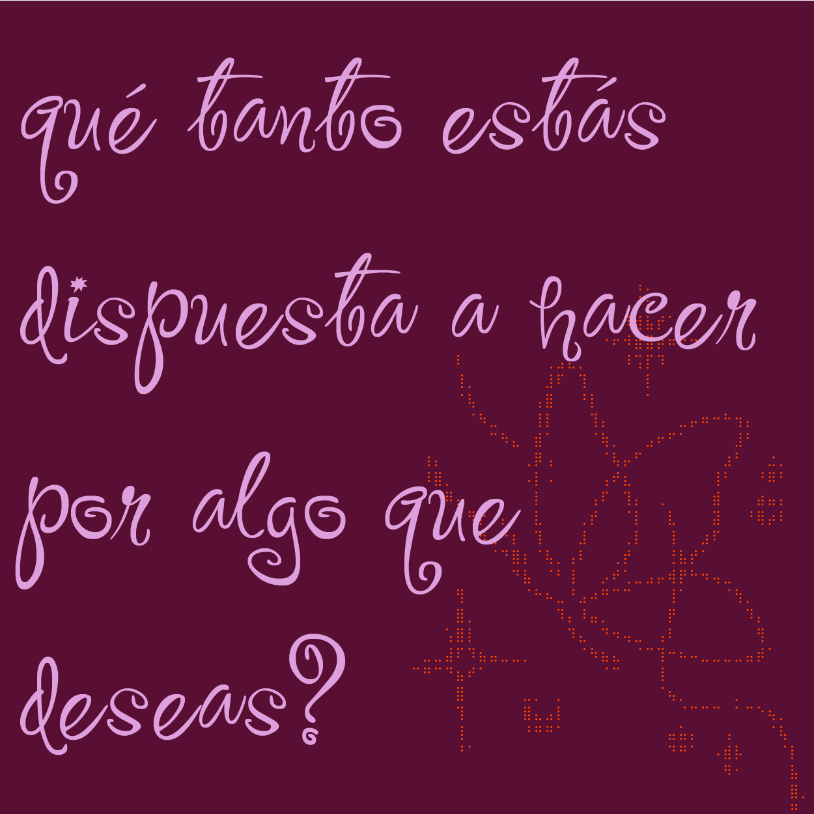

            <span id="hover-08" class="hover">armarse lo indispensable para pasar el tiempo_sobrevivir // pienso en los rincones de confort que se arma una en el trabajo</span>

            <span id="typewriter-13" class="typewriter" data-delay="16000">gestos del deseo muy íntimos que aparecen sin más, sin función, desde adentro, sin tanta vuelta, ni pensas si está bien o mal, <label for="trinkets" class="trinkets-btn">sólo lo querés cerca</label>, hay un componente de lo práctico_real que atenua el sentimiento abismal de enfrentarse a ese vacío que propone llenar el deseo</span>

            <span id="typewriter-14" class="typewriter" data-delay="16000">miro mi casa y está llena de <label for="trinkets-guille" class="trinkets-guille-btn">esos mini gestos</label></span>

            <span id="fixed-09" class="fixed fixed-delayed">me convierto en <label for="lain" class="lain-btn">cyber</label> zombi</span>

            <span id="camo-07" class="camo">casi lo que más me gusta de mi trabajo es que lo puedo hacer acostada</span>

            <span id="fixed-10" class="fixed fixed-delayed">el deseo ridículo tiene que ser 100% absurdo</span>

            <span id="typewriter-15" class="typewriter" data-delay="2000">dentro de él hay dos personas, el yo y el no-yo. sólo se sobrevive en este mundo con el no-yo... <span class="dif-tipo">qué hará entonces el yo para escapar del viento venenoso y poder soñar?</span></span>

            <span id="hover-09" class="hover">unir el yo y el no-yo, los deseos y la realidad de los mismos, los deseos increíbles, los miedosos, los que pueden dañar a otros, que es lo más real de todo eso... mundo amplio</span>

            <span id="fixed-11" class="fixed fixed-delayed">cuando estoy pasada de laburo me siento <label for="nemu" class="nemu-btn">ella</label></span>

            <span id="fixed-12" class="fixed fixed-delayed">hay veces que llego <label for="dream1" class="dream1-btn">ancestralmente</label> cansada</span>

            <span id="fixed-13" class="fixed fixed-delayed">guilleeeeeeee: luego de unas semanas locas me siento a responderte. la verdad es que me gusta mucho sentarme a <label for="pensamientos" class="pensamientos-btn">leerte con paciencia y tiempo</label></span>

            <span id="camo-08" class="camo">me gusta pensar en un futuro donde guardamos nuestra propia información y que sea parte del hogar</span>

            <span id="typewriter-16" class="typewriter" data-delay="24000" title="crear, abrir y cerrar, mantenerse en una danza y aprovechar esa infinitud de posibilidades">los rincones públicos, lo privado, las versiones de uno... lo pienso como una danza de movimientos donde se abre más acá, más allá, se mueve, se cierra</span>

            <span id="fixed-14" class="fixed fixed-delayed">una coreografía de intensidades</span>

            <span id="hover-10" class="hover">está bueno poner el foco simplemente en mantenerlo en movimiento y no tener abierto y cerrado siempre lo mismo</span>

            <span id="fixed-15" class="fixed fixed-delayed">
                <details>
                    <summary>aparece internet como espacio, no está el cuerpo ahí</summary>no hay límites, es inevitable que te absorba, todo es posible, todo el tiempo, present day... present time
                </details>
            </span>

            <span id="fixed-16" class="fixed fixed-delayed">tuve un <label for="dream2" class="dream2-btn">sueño</label> a los 4 años</span>

            <span id="fixed-17" class="fixed fixed-delayed flicker">es más divertido el efecto sorpresa de lo desconocido</span>

            <span id="fixed-18" class="fixed"><details>
                    <summary>me hace sentir el vientito en la cara, y pensar en un estado de presente infinito</summary>
                    <video width="560" controls>
                        <source src="material/deathsdynamicneonmemories.mp4" type="video/mp4"></video>
                </details>
            </span>
        </div>

    </div>

    <!-- popups -->

    <input type="checkbox" id="pete" style="display: none;">

    <div class="popup pete1">
        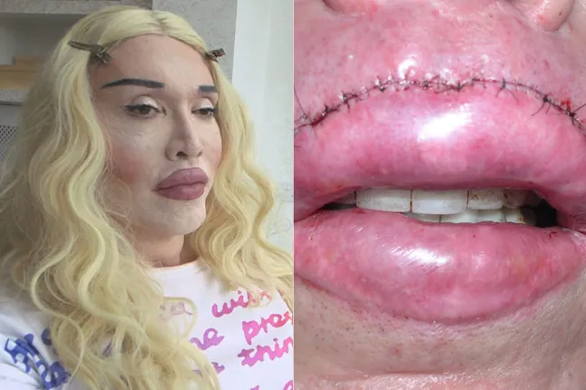
        <label for="pete" class="close">cerrar</label>
    </div>
    <div class="popup pete2">
        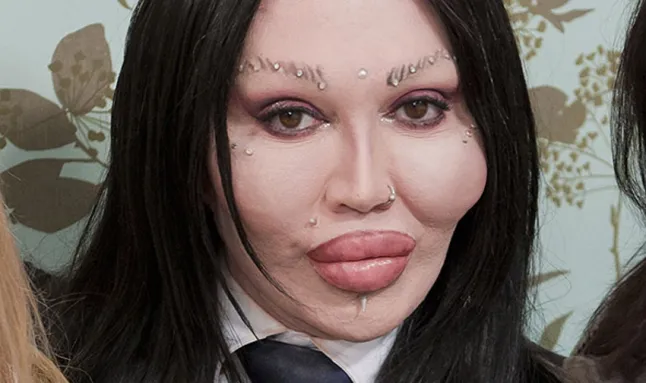
        <label for="pete" class="close">cerrar</label>
    </div>
    <div class="popup pete3">
        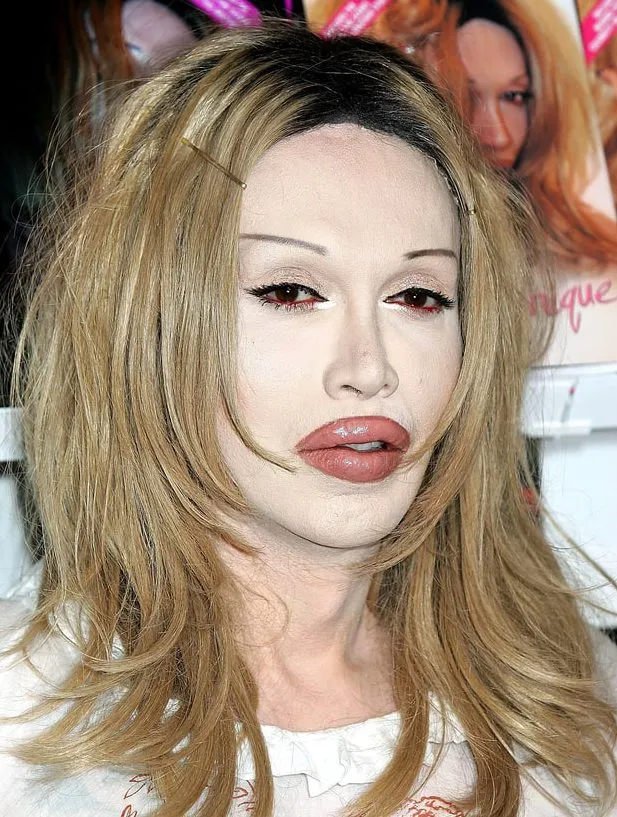
        <label for="pete" class="close">cerrar</label>
    </div>
    <div class="popup pete4">
        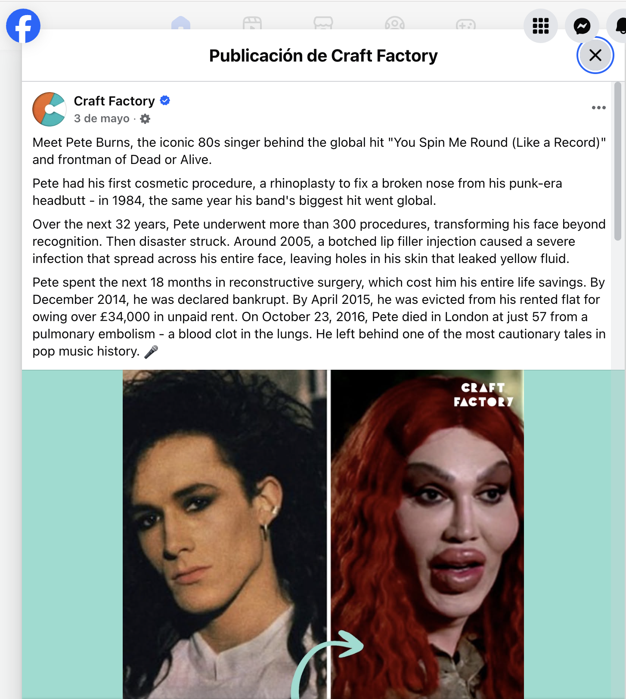
        <label for="pete" class="close">cerrar</label>
    </div>
    <div class="popup pete5">
        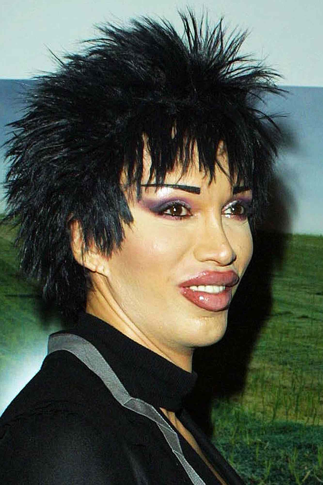
        <label for="pete" class="close">cerrar</label>
    </div>
    <div class="popup pete6">
        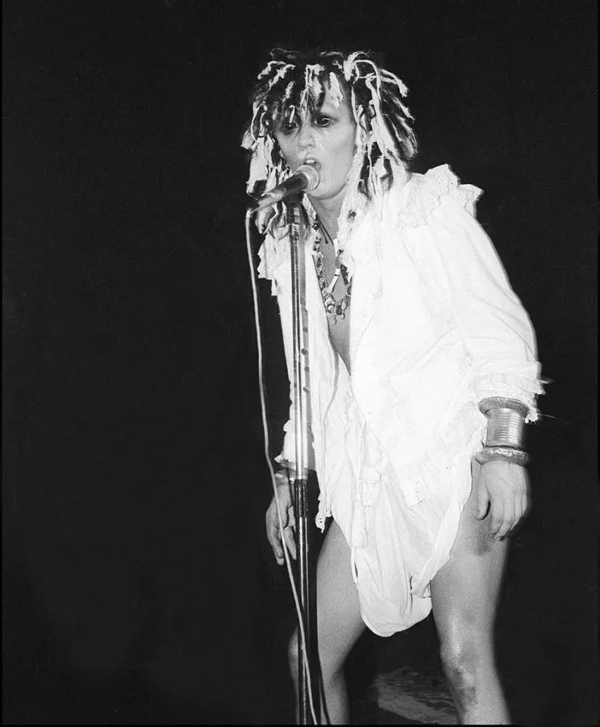
        <label for="pete" class="close">cerrar</label>
    </div>
    <div class="popup pete7">
        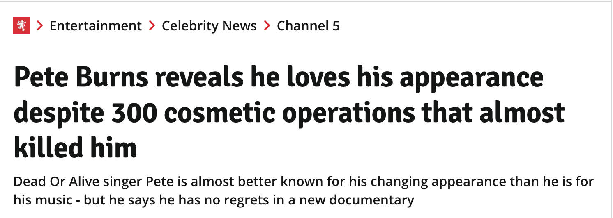
        <label for="pete" class="close">cerrar</label>
    </div>
    <div class="popup pete8">
        
        <label for="pete" class="close">cerrar</label>
    </div>
    <div class="popup pete9">
        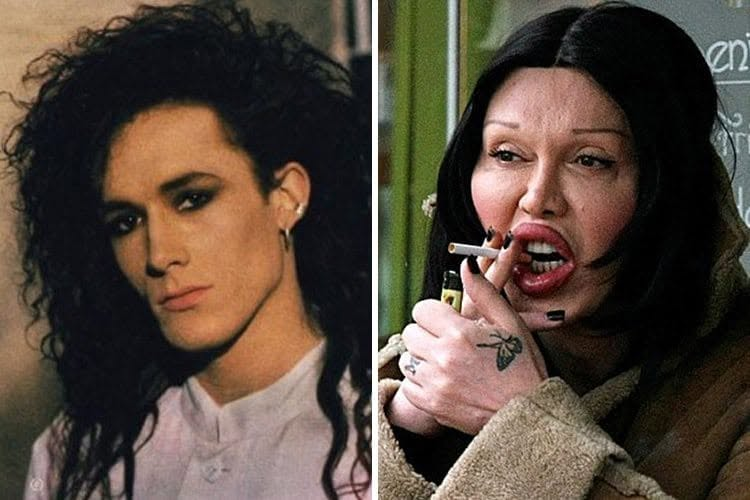
        <label for="pete" class="close">cerrar</label>
    </div>

    <input type="checkbox" id="claymore" style="display: none;">

    <div class="popup claymore1">
        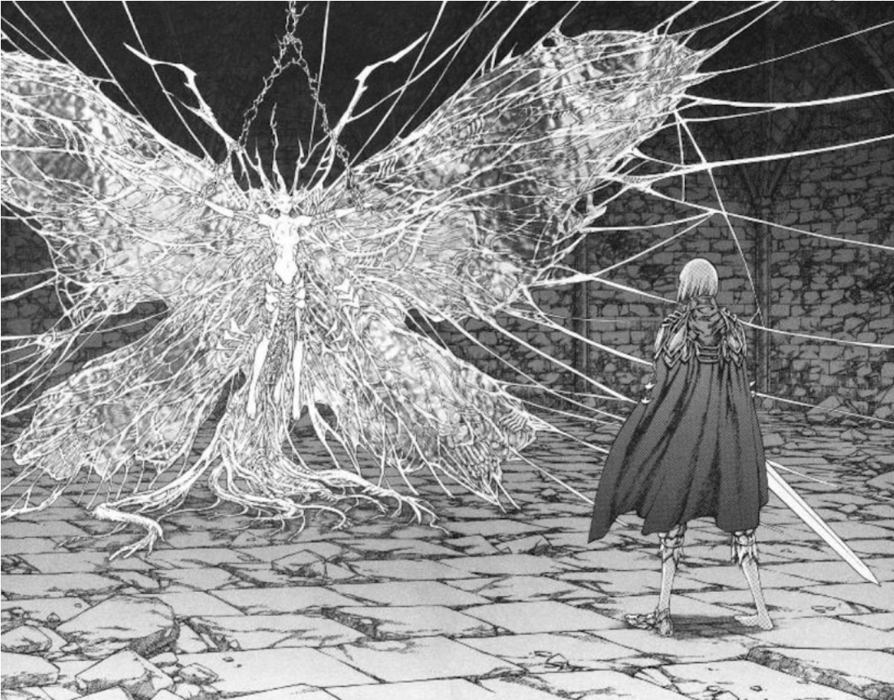
        <label for="claymore" class="close">cerrar</label>
    </div>
    <div class="popup claymore2">
        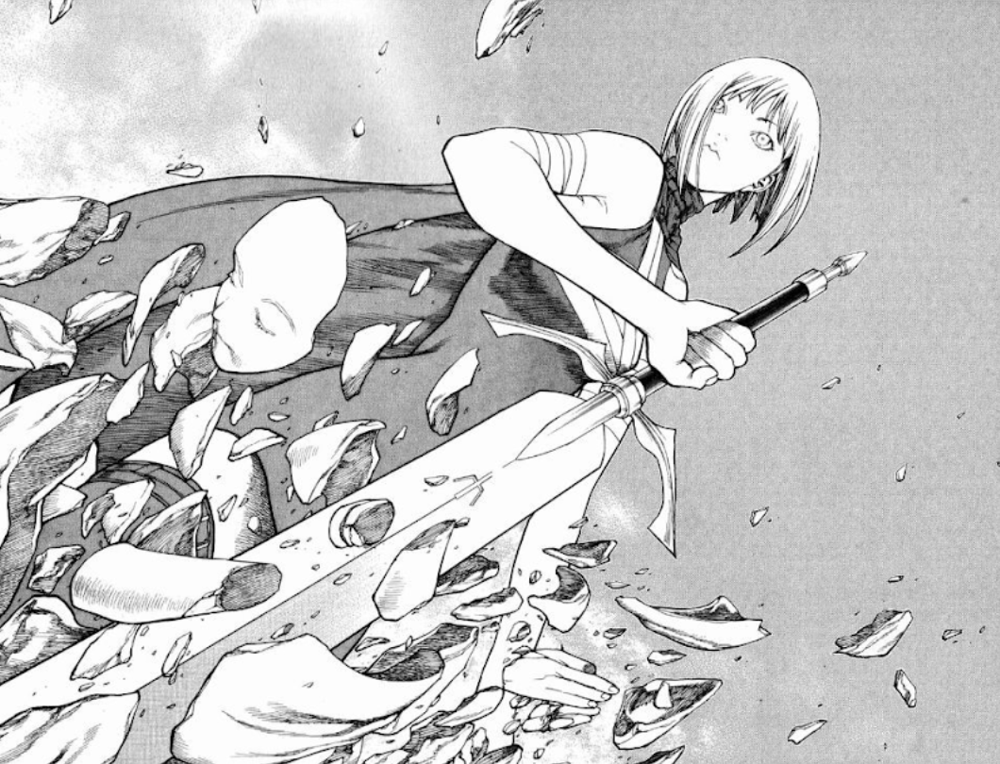
        <label for="claymore" class="close">cerrar</label>
    </div>

    <input type="checkbox" id="otayonii" style="display: none;">

    <div class="popup otayonii1">
        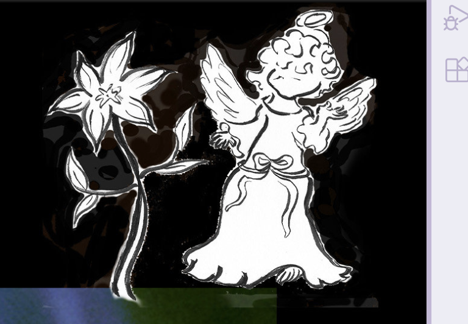
        <label for="otayonii" class="close">cerrar</label> 
    </div>
    <div class="popup otayonii2">
        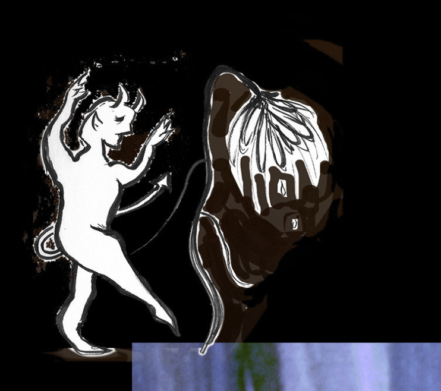
        <label for="otayonii" class="close">cerrar</label> 
    </div>
    <div class="popup otayonii3">
        <a href="https://www.youtube.com/watch?v=6LdK5osj5cM&list=RD6LdK5osj5cM" target="_blank">llevame a youtube (ㅅ •᷄ ₃•᷅ )</a>
        <label for="otayonii" class="close">cerrar</label> 
    </div>
    <div class="popup otayonii4">
        <p>I have no talent<br> Just a story out of another story<br> A fool will gain some wisdom in some relics<br> The talent that you call<br> Is the long memory after all<br> I got no talent<br> Just a story after another story<br> A fool will gain some wisdom in those relics<br> The talent that you call<br> Is the long memory after all<br> It's dull<br> But only getting more interesting —<br> I have no talent<br> Just a story out of another story<br> A fool will gain some wisdom in some relics<br> The talent that you call<br> It's dull<br> But only getting more interesting from now on<br> It's dull<br> But only getting more interesting from now on<br> It's dull<br> But only getting more interesting from now on<br> It's dull<br> But only getting more interesting from now on<br> It's dull<br> But only getting more interesting from now on<br> It's dull<br> But only getting more interesting from now on<br> It's dull<br> But only getting more interesting from now on<br> It's dull<br> But only getting more interesting from now on</p>
        <label for="otayonii" class="close">cerrar</label>
        </div>

        <input type="checkbox" id="trinkets" style="display: none;">

        <div class="popup trinkets1">
        <p>un perfume chino<br> agua<br> otro perfume pero para ambientes<br> encendedor<br> broche de pelo<br> crema para las manos<br> velador<br> un libro de dalí que uso de bandeja para la compu</p>
        <label for="trinkets-taller" class="trinkets-taller-btn">en el taller</label><br>
        <label for="trinkets" class="close">cerrar</label>
        </div>

        <input type="checkbox" id="trinkets-taller" style="display: none;">

        <div class="popup trinkets2">
        <p>un mantelito_repasador limpio<br> mate<br> termo con stickers<br> crema para manos<br> auriculares<br> alargue para tener el celular cerca cuando trabajo y necesito cargarlo</p>
        <label for="trinkets-taller" class="close">cerrar</label>
        </div>

        <input type="checkbox" id="trinkets-guille" style="display: none;">

        <div class="popup trinkets3">
        <p>un mechón de pelo de una amiha<br> el dibujo de un tatuaje que después me hizo un amigo en el brazo derecho<br> una vcarta de yu gi oh<br> una tartjetita de las que te dan en el tren con un mensaje romántico sobre besarse que me dio otro amigo<br> una trenza falsa que me regaló una amiga<br> mi termo y mate ambos preciosos con stickers de ranma 1/2 que comparto con todos los del taller<br> un libro abierto de f.gandolfo que está en el suelo<br> mi cartuchera</p>
        <label for="trinkets-guille-casa" class="trinkets-guille-casa-btn">en mi casa</label><br>
        <label for="trinkets-guille" class="close">cerrar</label>
        </div>

        <input type="checkbox" id="trinkets-guille-casa" style="display: none;">

        <div class="popup trinkets4">
        <p>en la heladera tengo fotos de muchos amigos que se fueron juntando con los años y se van desgastando<br> un osito de cerámica<br> una piedra blanca<br> una bellota que me traje del tigre hace mil<br> un gusano de vidrio con sombrerito<br> un pompón rojo muy chiquito<br> un libro de chino que uso para apoyar la compu<br> varios libros que estoy leyendo a la vez</p>
        <label for="trinkets-guille-casa" class="close">cerrar</label>
        </div>

        <input type="checkbox" id="lain" style="display: none;">

        <div class="popup lain1">
        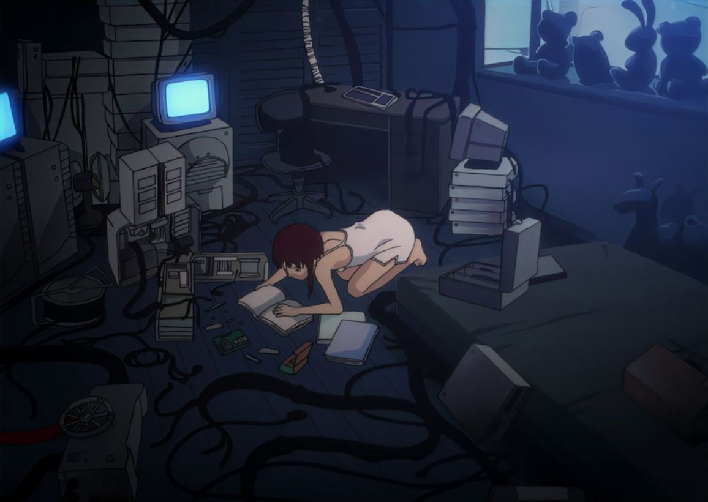
        <label for="lain" class="close">cerrar</label> 
        </div>
        <div class="popup lain2">
        <p>cuando estoy un poco pasada de laburo hasta tarde me siento un poco la crazy lain</p>
        <label for="lain" class="close">cerrar</label> 
        </div>
        <div class="popup lain3">
        <iframe width="560" height="315" src="https://www.youtube.com/embed/MM8RufZr5lw?si=lCxv6iz200dN9p6k" title="YouTube video player" frameborder="0" allow="accelerometer; autoplay; clipboard-write; encrypted-media; gyroscope; picture-in-picture; web-share" referrerpolicy="strict-origin-when-cross-origin" allowfullscreen></iframe>
        <label for="lain" class="close">cerrar</label> 
        </div>

        <input type="checkbox" id="nemu" style="display: none;">

        <div class="popup nemu1">
        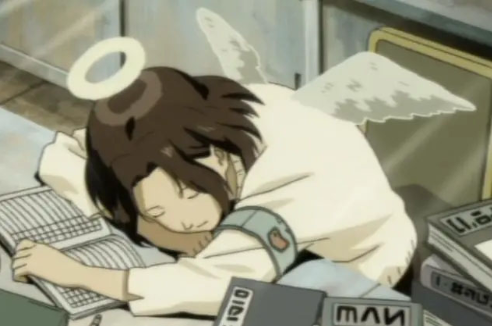
        <label for="nemu" class="close">cerrar</label> 
        </div>

        <input type="checkbox" id="dream1" style="display: none;">

        <div class="popup dream1">
        <p>me pasa mucho de verme dormir en mis propios sueños, o de verme directamente haciendo lo que sea que haga en los sueños... no suelo soñar en primera persona, a vos te pasa también?</p>
        <label for="dream1" class="close">cerrar</label>
        </div>

        <input type="checkbox" id="pensamientos" style="display: none;">

        <div class="popup pensamientos">
        <p>en general me disparan distintos pensamientos, me levanto a pensar un poco, acaricio a las gatas, bailo mientras <a href="https://www.youtube.com/watch?v=_iQvomsr6UE&list=RD_iQvomsr6UE&start_radio=1" target="_blank">escucho</a> lo que me pasaste</p>
        <label for="pensamientos" class="close">cerrar</label>
        </div>

        <input type="checkbox" id="dream2" style="display: none;">

        <div class="popup dream2">
        <p>me levantaba de mi cama y me iba al patio para ir al baño, estaba alejado, y me encontraba con una bruja que me quería comer con mosgtaza :////// recuedo el miedooo pero lo que más me sorprende es el poder del cerebero de recordarlo por tanto tiempo</p>
        <label for="dream2" class="close">cerrar</label>
        </div>
    <script src="script.js"></script>
</body>